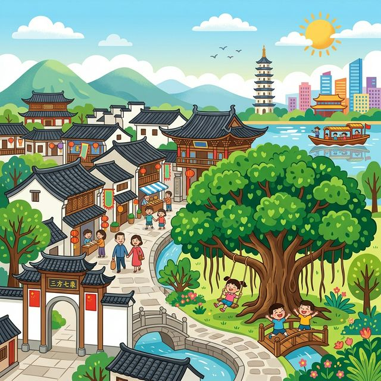
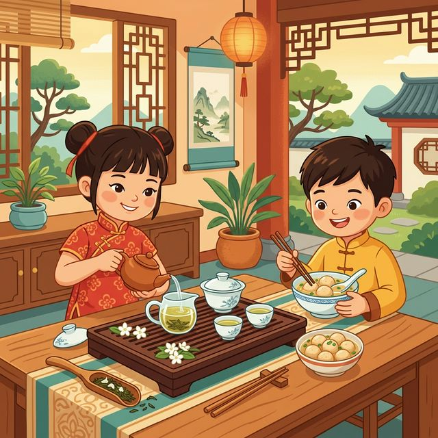

亲爱的小探险家，欢迎来到有“榕城”之称的福州！
这里有着2200多年的悠久历史，到处都是巨大的古榕树和飘香的茉莉花。带上这本手册，让我们一起去漫步古巷、品尝美食吧！
🗺️ 1. 核心知识点
🎒 2. 出发准备
📖 3. 趣味小故事
🔍 4. 观察记录表
福州的“市树”。榕树可以长得非常巨大，它的枝干上还会长出“胡须”（气生根），非常神奇！
福州最著名的历史文化街区，保存着大批明清时期的古建筑，被称为“里坊制度活化石”。
福州的特产花茶。神奇的制茶工艺让茶叶吸收茉莉花的香气，闻起来超级香！
福州传统小吃。用鱼肉做皮，里面包着肉馅，又Q弹又美味，你一定要尝尝！
在中国近现代历史上，三坊七巷走出了非常多有名的大人物，比如林则徐、严复、冰心等，所以有个说法叫“一片三坊七巷，半部中国近现代史”！

林则徐是中国历史上著名的民族英雄，他是福州人哦！他小的时候非常爱读书，后来他为了保护国家，在广东虎门销毁了大量毒品（鸦片）。福州现在还有“林则徐纪念馆”呢！
你在福州的大街小巷里，有没有看到什么特别的东西？比如一棵奇特的大树，或者一碗美味的鱼丸？